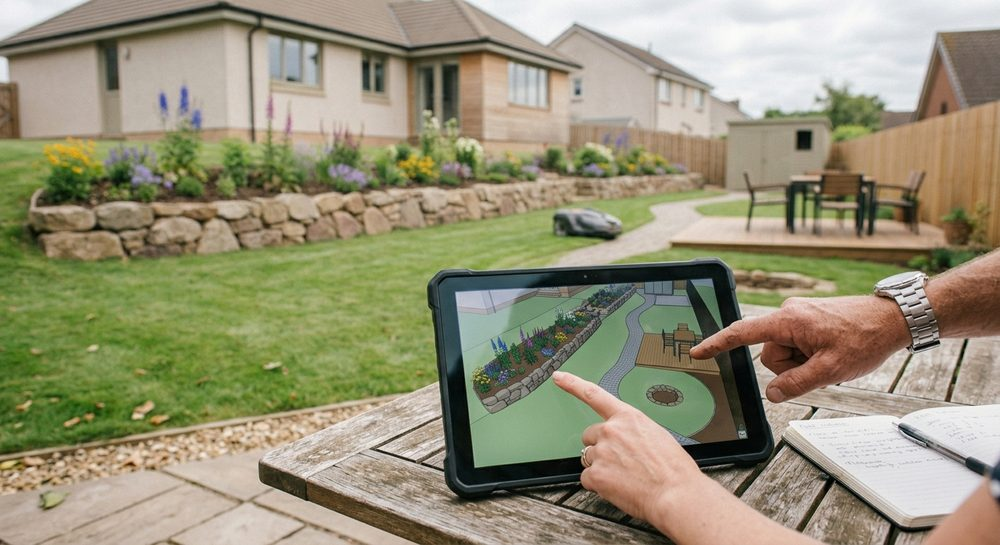
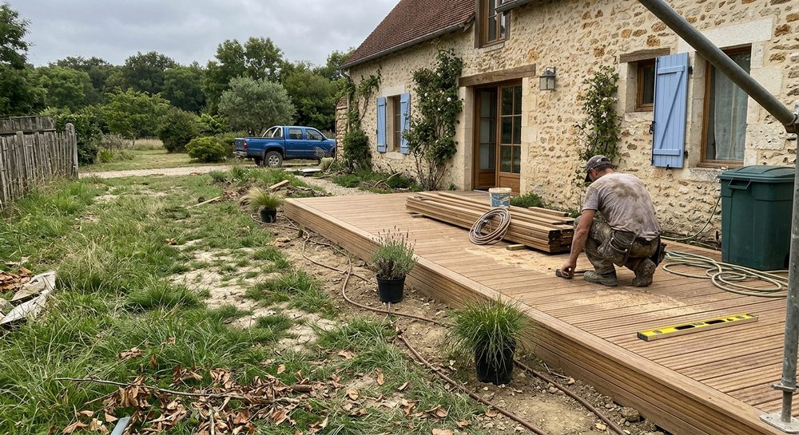
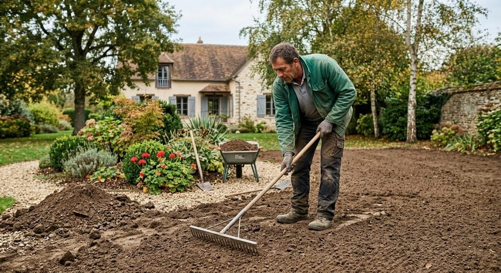
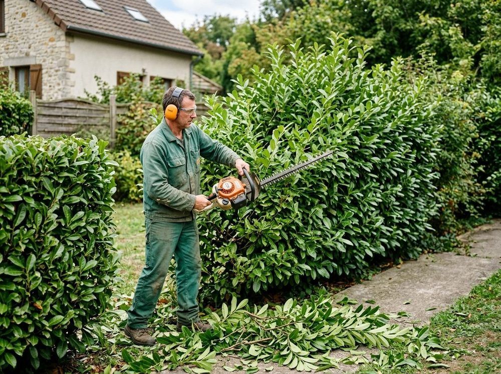

Prestations
Créer, aménager, entretenir votre jardin.
Du plan à la dernière plantation, Aurea Paysages prend en charge l'aménagement paysager de votre extérieur à Viroflay et dans les Yvelines.




Création d'espaces verts
Pelouse, massifs, bordures, cheminements : nous donnons une structure à votre terrain pour qu'il soit beau et simple à entretenir.
- Plan d'aménagement
- Engazonnement et massifs
- Allées et bordures

Terrassement et préparation
Un bon jardin commence sous la surface : nivellement, préparation du sol et mise en forme avant plantation ou engazonnement.
- Nivellement du terrain
- Préparation des sols
- Mise en forme des espaces

Plantations
Arbustes, vivaces et massifs choisis pour leur tenue dans le temps, la lumière de votre jardin et la nature de votre sol.
- Arbustes et vivaces
- Massifs et bordures
- Conseils d'arrosage

Entretien et taille
Tonte, taille de haies, ramassage des feuilles : un entretien régulier pour un jardin net, quelle que soit la saison.
- Tonte des pelouses
- Taille des haies
- Entretien saisonnier
Parlons de votre jardin.
Un terrain à aménager ou un entretien à confier ? Dites-nous ce dont vous avez besoin.